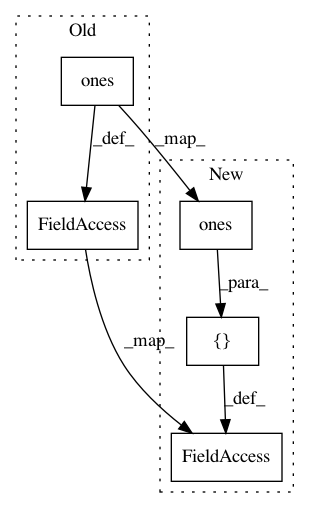

a8812b2034cfa8517c5b4911aa4333f0e34a8b6f,niftynet/network/dense_vnet.py,Affine3DAugmentationLayer,random_transform,#Affine3DAugmentationLayer#Any#,363
Before Change
corners2 = corners * \
(1-tf.random_uniform([batch_size,8,3],0,self.scale))
corners_homog = tf.concat([corners,tf.ones([batch_size,8,1])],2)
corners2_homog = tf.concat([corners2,tf.ones([batch_size,8,1])],2)
_transform = tf.matrix_solve_ls(corners_homog,corners2_homog)
self._transform = tf.transpose(_transform,[0,2,1])
return self._transform
def inverse_transform(self, batch_size):
After Change
[1., 1., -1.],
[1., 1., 1.]]
]
_batch_ones = tf.ones([batch_size, 8, 1])
corners = tf.tile(corners, [batch_size, 1, 1])
random_scale = tf.random_uniform([batch_size, 8, 3], 0, self.scale)
corners2 = corners * (1 - random_scale)
corners_homog = tf.concat([corners, _batch_ones], 2)
corners2_homog = tf.concat([corners2, _batch_ones], 2)
_transform = tf.matrix_solve_ls(corners_homog, corners2_homog)
self._transform = tf.transpose(_transform, [0, 2, 1])
return self._transform
In pattern: SUPERPATTERN
Frequency: 3
Non-data size: 5
Instances
Project Name: NifTK/NiftyNet
Commit Name: a8812b2034cfa8517c5b4911aa4333f0e34a8b6f
Time: 2018-01-09
Author: rmaplue@ucl.ac.uk
File Name: niftynet/network/dense_vnet.py
Class Name: Affine3DAugmentationLayer
Method Name: random_transform
Project Name: NifTK/NiftyNet
Commit Name: f4ed926c2a8a7f0fc30c171d83907134dafd54eb
Time: 2018-07-21
Author: wenqi.li@ucl.ac.uk
File Name: niftynet/layer/crf.py
Class Name: CRFAsRNNLayer
Method Name: layer_op
Project Name: keras-team/keras
Commit Name: d663fda862df1c831e7f93f1e3feb2e189a1b9ef
Time: 2017-02-16
Author: francois.chollet@gmail.com
File Name: keras/layers/convolutional_recurrent.py
Class Name: ConvLSTM2D
Method Name: build